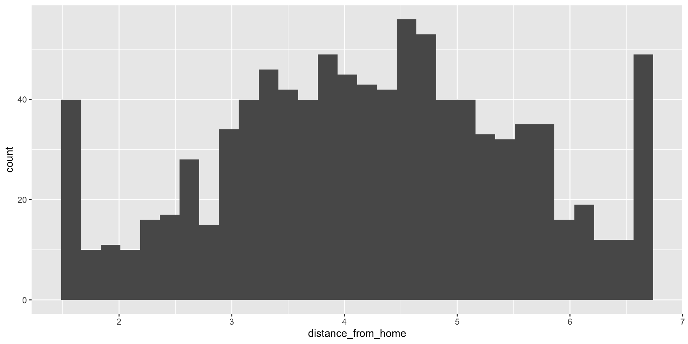
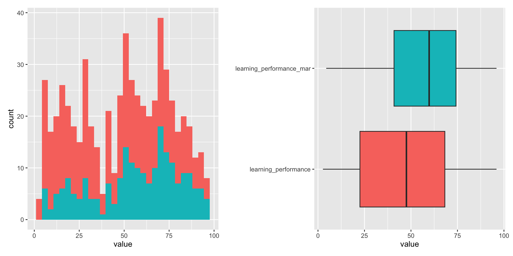
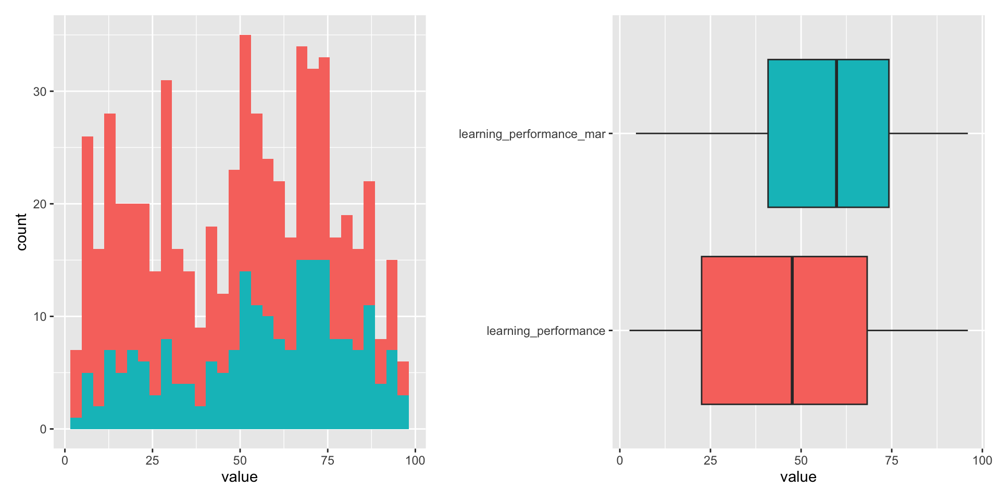
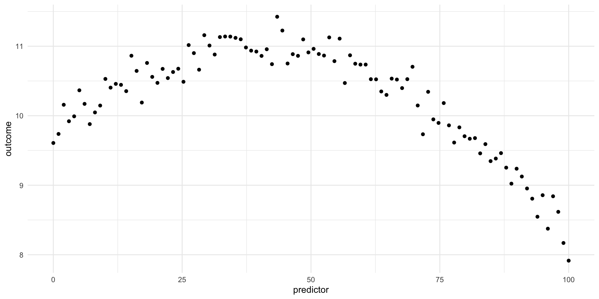
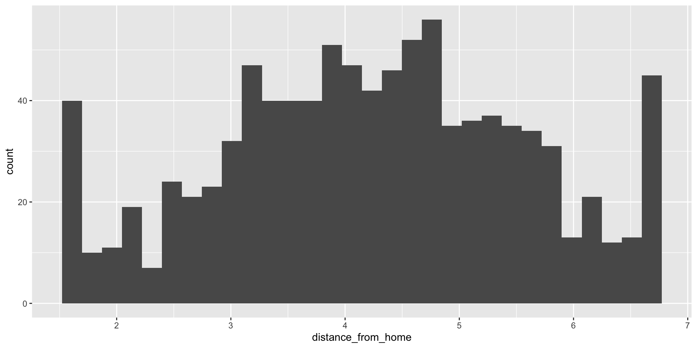
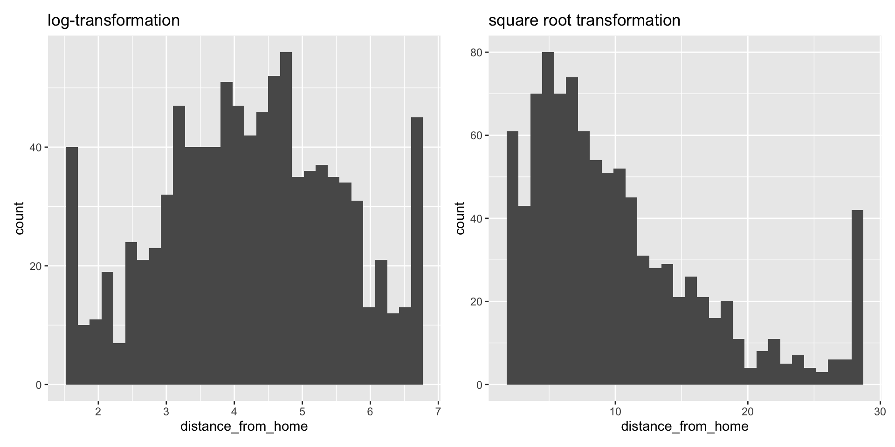

Week 3-4: Feature Engineering
recipess • Workflows • Leakage Safety • Explainability
ผศ.ดร.สิวะโชติ ศรีสุทธิยากร
2026-02-11
Part1 : บทนำ
Model-Centric
Data-Centric
Modelling Process
อย่าลืมว่า modelling เป็นเพียงส่วนหนึ่งของกระบวนการทาง data science ทั้งหมด

https://www.tmwr.org/software-modeling.html#model-phases
Feature Engineering
โมเดลที่ดี (Great Model) ไม่สามารถเกิดขึ้นได้ หากปราศจากข้อมูลที่ดี (Great Data)
Feature Engineering คือศาสตร์และศิลป์ในการปรับแต่งและแปลงข้อมูลให้อยู่ในรูปแบบที่เหมาะสมที่สุดเพื่อแก้ปัญหาทาง ML รวมถึงการลดความซับซ้อนและอคติที่แฝงอยู่ในข้อมูล
https://www.tmwr.org/software-modeling.html#model-phases
Modelling Process vs Feature Engineering
FEAT ไม่ใช่ขั้นตอนที่แยกจาก ML modelling process แต่เป็นส่วนหนึ่งที่สำคัญของกระบวนการ
กระบวนการย่อยของ FEAT เกี่ยวข้อง/เจาะลึกในกระบวนการที่เกี่ยวข้องกับการจัดการข้อมูลโดยเฉพาะ อาจจำแนกเป็น 4 ขั้นตอน ได้แก่
Feature Understanding – วิเคราะห์ทำความเข้าใจคุณลักษณะของ feature แต่ละตัว เช่น การระบุสถานะของข้อมูล ความหมายเบืิ้องต้น การแจกแจงเบื้องต้น (ถ้าสามารถทำได้) และความสัมพันธ์กับตัวแปรเป้าหมาย
Feature Structuring – แปลงข้อมูลที่ไม่มีโครงสร้าง เช่น ข้อความ รูปภาพ เสียง และอื่น ๆ ให้อยู่ในรูปแบบที่มีโครงสร้าง เพื่อให้ ML model สามารถนำไปใช้ได้
Feature Optimization – ใช้เทคนิคต่าง ๆ ปรับแต่ง/ปรับปรุง feature ที่มีอยู่ หรือสร้าง feature ใหม่จากข้อมูลเดิม เพื่อให้ข้อมูลมีสัญญาณหลักที่ชัดเจนขึ้น มีความหมายที่ตีความได้ง่าย สมเหตุสมผล และเพิ่มประสิทธิภาพการทำนายของโมเดล
Feature Evaluation – ประเมินคุณภาพของ feature ที่สร้างขึ้นหรือปรับแต่งแล้ว โดยใช้ metric ต่าง ๆ เช่น feature importance, correlation analysis, mutual information, predictive power analysis เป็นต้น
ประเภทของ Feature Engineering
Feature Improvement – การปรับปรุงคุณภาพของ feature ที่มีอยู่ เช่น การจัดการกับค่าที่ขาดหาย การลด noise การปรับสเกล และการแปลงข้อมูล
Feature Construction – การสร้าง feature ใหม่จากข้อมูลเดิม เช่น การสร้างตัวแปรเชิงปริมาณจากตัวแปรเชิงหมวดหมู่ การสร้างตัวแปร interaction และการสร้างดัชนีต่าง ๆ
Feature Extraction – อัลกอริทึมสำหรับดึงสาระสำคัญ/ข้อมูลที่ต้องการ จากข้อมูลดิบออกมาเป็น feature เช่น PCA, autoencoders หรือ text embeddings
Feature Learning – การใช้โมเดลการเรียนรู้ของเครื่อง เช่น neural networks เพื่อเรียนรู้และสร้าง feature ใหม่จากข้อมูลดิบ
Tidymodels core packages
rsample: general methods for resampling
recipes: unified interface to data preprocessing parsnip: unified interface to modeling
workflows: combine model blueprints and preprocessing recipes
dials: create tuning parameters
tune: hyperparameter tuning
broom: tidy model outputs
yardstick: model evaluation

ชุดข้อมูลตัวอย่าง
library(tidyverse)
library(tidymodels)
data <- read_csv("student_data.csv")
data <- data %>% mutate(student_id = 1:dim(data)[1], .before = everything())
glimpse(data, 80)Rows: 1,200
Columns: 21
$ student_id <int> 1, 2, 3, 4, 5, 6, 7, 8, 9, 10, 11, 12, 13, 14, …
$ age <dbl> 23, 22, 21, 20, 24, 24, 22, 21, 18, 18, 18, 22,…
$ years_study <dbl> 2, 2, 4, 2, 2, 3, 4, 2, 2, 1, 1, 3, 2, 5, 3, 3,…
$ major <chr> "Business", "Science", "Science", "Science", "E…
$ level <chr> "Undergraduate", "Undergraduate", "Undergraduat…
$ work_status <chr> NA, "Not Working", "Working", "Not Working", "N…
$ gpa <dbl> 0.88, 3.39, 2.27, 3.23, 3.33, 1.36, 4.00, 1.30,…
$ credits_per_term <dbl> 13, 15, 11, 11, 14, 10, 14, 19, 19, 20, 11, 12,…
$ withdrawal_count <dbl> 2, 0, 1, 0, 0, 4, 0, 1, 0, 2, 0, 1, 0, 0, 1, 0,…
$ failed_courses <dbl> 2, 0, 0, 0, 0, 2, 0, 0, 0, 2, 0, 0, 1, 1, 2, 0,…
$ scholarship_status <chr> "None", "None", "None", "None", "Full", "None",…
$ family_income <dbl> 127856, NA, 35622, NA, 31053, 2587, 44786, 4733…
$ monthly_expense <dbl> 9393, 12666, 15042, 15135, 12895, 10711, 12275,…
$ payment_status <chr> "Current", NA, "Current", NA, "Current", "Delay…
$ absence_count <dbl> 11, 0, 14, 0, 0, 20, 3, 11, 0, 10, 9, 25, 4, 2,…
$ activity_participation <dbl> 2, 2, 0, 6, 3, 0, 4, 2, 4, 2, 1, 0, 5, 2, 1, 3,…
$ library_usage <dbl> 2, 8, 6, 7, 6, 5, 9, 3, 9, 3, 4, 3, 3, NA, 4, 4…
$ distance_from_home <dbl> 73, 220, 26, 341, 42, 66, 62, 159, 10, 598, 98,…
$ accommodation_type <chr> "Apartment", "Dormitory", "Home", "Dormitory", …
$ commute_hours <dbl> 0.8, 1.0, 1.0, 1.1, 0.5, 2.6, 2.5, 1.3, 0.5, 0.…
$ academic_risk <chr> "High Risk", "Low Risk", "Medium Risk", "Low Ri…ชุดข้อมูลตัวอย่าง
Feature Engineering
ประสิทธิภาพโมเดลมักได้มาจาก คุณภาพฟีเจอร์ มากกว่าความซับซ้อนของอัลกอริทึม
-
Feature Engineering คือกระบวนการแปลงหรือปรับแต่งข้อมูลดิบ (raw data) ให้อยู่ในรูปแบบที่เหมาะสมสำหรับการสร้างโมเดลการเรียนรู้ของเครื่อง
เพิ่มประสิทธิภาพการเรียนรู้ของโมเดล –> ประสิทธิภาพในการทำนาย
แก้ไขปัญหาลดข้อจำกัดที่เกิดขึ้นในข้อมูล
ช่วยให้การตีความหมายผลลัพธ์ของโมเดลทำได้ง่ายขึ้น
Feature Engineering = ศาสตร์/ศิลป์ แปลงข้อมูลดิบให้กลายเป็น features ที่เครื่องสามารถเรียนรู้ได้ดี
-
แยกเป็น 2 มิติ
Data Preprocessing (ให้โมเดลทำงานได้)
Feature Creation (ทำให้โมเดลทำงานได้ดี)
ควรทำ feature engineering ตอนไหน?
ก่อนที่จะ train model
ระหว่างที่ train model
หลังจากที่ train model แล้ว
แนวคิดหลัก
| ประเภท | เป้าหมายหลัก | ตัวอย่าง step_* (คละ basic/advance) |
เมื่อควรใช้ / ข้อควรระวัง |
|---|---|---|---|
|
Data Preprocessing (ทำให้โมเดล “ทำงานได้”) |
แก้ NA, แปลงชนิดข้อมูล, ปรับสเกล/รูปแจกแจง, ตัด noise/redundancy |
step_impute_knn, step_impute_bag, step_unknown, step_novel • step_other, step_dummy • step_log, step_YeoJohnson, step_BoxCox • step_normalize, step_spatialsign • step_zv, step_nzv, step_corr, step_lincomb • step_date, step_holiday • themis::step_smote¹, themis::step_downsample, themis::step_upsample
|
- ใช้ prep() กับ train เท่านั้น เพื่อกัน leakage; sampling steps (เช่น step_smote) ใส่ skip=TRUE เพื่อ ไม่ ใช้กับข้อมูลใหม่.- ใส่ลำดับให้ถูก: encode → scale → filter; ตัวอย่าง interaction ควรเกิด หลัง dummy |
|
Feature Creation (ทำให้โมเดล “ทำงานได้ดีขึ้น”) |
สร้างสัญญาณใหม่ จับ nonlinearity/interaction โครงสร้างเวลา/ข้อความ |
step_interact • step_poly, step_ns • step_discretize • step_mutate (row-wise ratios/logs) • step_pca, step_kpca, step_ica • embed::step_umap² • embed::step_lencode_glm, embed::step_lencode_mixed² (impact/target-based encoding ภายใต้การควบคุม) • textrecipess::step_tokenize, textrecipess::step_stopwords, textrecipess::step_ngram, textrecipess::step_tfidf³ |
- เลี่ยง leakage เมื่อใช้ encoding อิงเป้าหมาย: ทำภายใน resampling ที่ถูกต้องเท่านั้น (ผ่าน fit_resamples).- step_mutate ให้คงเป็น row-wise (เช่น x/y, log(x)); อย่าคำนวณสถิติทั้งคอลัมน์ใน bake()
|
| Boundary / Hybrid | ลดยุ่งเหยิง/มิติ พร้อมคงสัญญาณ |
step_other (ก่อน dummy), step_corr (ลด redundancy) • step_pca (หลัง normalize) • embed::step_umap² |
- ชั่งน้ำหนักระหว่าง ตีความได้ (filter selection) กับ พลังทำนาย (feature extraction). - ตรวจสอบผลด้วย metric ทั้งเชิงพยากรณ์และความอธิบายได้. |
เชิงอ้างอิง/บันทึก
1) themis เหมาะกับ class imbalance (step_smote, step_downsample, step_upsample); ใส่ไว้ ก่อน โมเดลและใช้เฉพาะ train fold (skip=TRUE).
2) embed ให้เครื่องมือ encoding/embedding ขั้นสูง (step_lencode_*, step_umap).
3) textrecipess ใช้กับข้อมูลข้อความทั้งสาย (tokenize → clean → n-gram → tf-idf ฯลฯ).
หลักการของ recipes
library-recipes เป็น framework ที่ีรวบรวมฟังก์ชันสำหรับการเตรียมข้อมูลและการทำ feature engineering ซึ่งทำงานร่วมกับ tidymodels ได้เป็นอย่างดี
- นิยามการแปลงข้อมูลแยกจากนิยามโมเดล นำ recipes เดียวไปรันกับหลายโมเดลได้
- ทุกขั้นตอนถูกเก็บใน recipes object เดียว ตรวจสอบ ทำซ้ำ ปรับปรุง และส่งต่อได้
- การ preprocessing จะคำนวณพารามิเตอร์จาก train เท่านั้น แล้วจึงนำพารามิเตอร์ดังกล่าวไปใช้ในการ preprocess ข้อมูลใหม่ (test/validation) ซึ่งช่วยป้องกันปัญหา data leakage ได้อย่างมีประสิทธิภาพ
หลักการของ recipes
แต่ละ recipe ประกอบด้วยการแปลงข้อมูลหลายขั้นตอนที่เชื่อมโยงกัน กระบวนการนี้ต้องเริ่มต้นจาก การสร้าง recipe object ก่อน โดยใช้ฟังก์ชัน recipe() ที่มีอาร์กิวเมนท์ 2 ตัวได้แก่
formula— สูตรระบุความสัมพันธ์ระหว่างตัวแปรตาม (response) และตัวแปรอิสระ (predictors) ซึ่งจะเขียนในรูปแบบy ~ x1 + x2 + ...หรือy ~ .(ทุกตัวแปรยกเว้น y)data— ชุดข้อมูลที่จะใช้ในกระบวนการ preprocessing
หลักการของ recipes
หลังจากสร้าง recipe object แล้ว เราสามารถเพิ่มขั้นตอนการแปลงข้อมูลต่าง ๆ ลงใน recipe ได้โดยใช้ฟังก์ชัน step_*() ซึ่งมีหลายประเภท เช่น
- ขั้นแรกจะใช้
update_role()เพื่อกำหนดบทบาทของตัวแปร (เช่น เปลี่ยนstudent_idเป็น ID variable)
หลักการของ recipes
step_impute_median()— แทนค่าขาดหายด้วยค่ามัธยฐาน (เหมาะกับข้อมูลที่มี outliers)ผู้เรียนลองสำรวจผลลัพธ์ที่ได้จากการทดแทนค่าสูญหายได้ โดยพิมพ์คำสั่ง
rec %>% prep() %>% juice()จากนั้นนำผลลัพธ์ที่ได้ไปสำรวจ
หลักการของ recipes
step_normalize()ใช้้ปรับสเกลตัวแปรเชิงปริมาณให้มีสเกลแบบคะแนนมาตรฐาน (standardized score) กล่าวคือ มีค่าเฉลี่ยเป็น 0 และส่วนเบี่ยงเบนมาตรฐานเป็น 1step_range()ใช้ปรับสเกลตัวแปรเชิงปริมาณให้มีสเกลแบบ normalized score กล่าวคือมีค่าอยู่ในช่วง [0,1] สเกลนี้เรียกอีกชื่อว่า min-max scaling
── Recipe ──────────────────────────────────────────────────────────────────────── Inputs Number of variables by roleoutcome: 1
predictor: 19
ID: 1── Operations • Median imputation for: family_income• Centering and scaling for: all_numeric_predictors()Note
เราสามารถใช้ helper functions จาก dplyr เช่น starts_with(), ends_with(), contains(), matches(), num_range() หรือใช้ selectors จาก tidyselect เช่น all_numeric_predictors(), all_nominal_predictors() เพื่อเลือกตัวแปรที่ต้องการได้
หลักการของ recipes
step_dummy()ใช้แปลงตัวแปรเชิงหมวดหมู่ (categorical) ให้เป็นตัวแปรจำลอง (dummy/indicator variables) โดยค่าเริ่มต้นจะสร้าง k-1 dummy variables เพื่อหลีกเลี่ยงปัญหา multicollinearityส่วนใหญ่เหมาะกับโมเดลเชิงเส้น (linear models) และโมเดลที่อิงระยะห่าง (distance-based models) เช่น k-NN, SVM, K-means
หลักการของ recipes
สมมุติว่าเรากำหนด preprocessing steps ครบแล้ว ขั้นตอนที่ 3 คือการ fit (prep) recipe กับข้อมูล train เพื่อคำนวณพารามิเตอร์ต่าง ๆ ที่จำเป็นสำหรับการแปลงข้อมูล
── Recipe ──────────────────────────────────────────────────────────────────────── Inputs Number of variables by roleoutcome: 1
predictor: 19
ID: 1── Training information Training data contained 960 data points and 504 incomplete rows.── Operations • Median imputation for: family_income | Trained• Centering and scaling for: age, years_study, gpa, ... | Trained• Dummy variables from: major, level, work_status, ... | TrainedData Leakage และการป้องกันด้วย prep()
Caution
เมื่อเราใช้ prep() กับ recipe สุดท้าย
ระบบจะ fit recipe เฉพาะกับ training set (ตามที่ระบุใน recipe())
ซึ่งช่วยป้องกันปัญหา data leakage ได้!
Data Leakage คืออะไร?
- ข้อมูลจาก นอก training set (เช่น test set) รั่วเข้ามาในขั้นตอน train model
- ส่งผลให้โมเดลดูเหมือนทำงานได้ดีเกินจริง เพราะมันได้เห็น test set บางส่วนมาแล้ว
- มักเกิดขึ้นเมื่อมีการคำนวณค่าทางสถิติจาก ทั้ง dataset แทนที่จะใช้เฉพาะ training set
ผลกระทบจาก Data Leakage
- โมเดลมี performance สูงเกินจริงบน test set
- แต่เมื่อเจอ ข้อมูลใหม่จริง ๆ ประสิทธิภาพจะตกลง
- สร้างความเข้าใจผิดในการประเมินโมเดล
Note: Imperatives vs Declarative Programming
Imperative Programming
- เขียนคำสั่ง → รันทันที
- ได้ผลลัพธ์ออกมาในตอนนั้นเลย
- สิ่งที่ผู้ใช้ R ส่วนใหญ่คุ้นเคย เช่น
Declarative Programming
- เขียนคำสั่งแบบ “ประกาศ” ว่า จะทำอะไร พร้อมข้อกำหนด (constraints)
- การรันจริงจะเกิดขึ้น “ทีหลัง” ตามที่ผู้ใช้หรือโปรแกรมกำหนด
- เช่น การสร้าง recipe ใน tidymodels
หลักการของ recipes
# A tibble: 960 × 27
student_id age years_study gpa credits_per_term withdrawal_count
<int> <dbl> <dbl> <dbl> <dbl> <dbl>
1 12 0.380 0.189 -1.49 -0.458 0.301
2 26 -1.41 0.880 -0.405 -0.974 0.301
3 29 -1.41 2.26 -1.87 -2.01 1.27
4 51 -0.515 2.26 -1.69 -0.458 0.301
5 62 0.827 -0.501 -1.55 0.315 1.27
6 74 -0.0675 0.880 -2.67 0.315 3.21
7 103 1.27 0.880 -1.89 -0.200 2.24
8 145 0.827 2.26 -1.57 -2.01 2.24
9 151 -1.41 1.57 -1.35 -0.200 1.27
10 170 2.17 0.189 -2.08 0.315 1.27
# ℹ 950 more rows
# ℹ 21 more variables: failed_courses <dbl>, family_income <dbl>,
# monthly_expense <dbl>, absence_count <dbl>, activity_participation <dbl>,
# library_usage <dbl>, distance_from_home <dbl>, commute_hours <dbl>,
# academic_risk <fct>, major_Engineering <dbl>, major_Liberal.Arts <dbl>,
# major_Medicine <dbl>, major_Science <dbl>, level_Undergraduate <dbl>,
# work_status_Working <dbl>, scholarship_status_None <dbl>, …ตัวอย่างโครงสร้างของ recipe

https://raw.githubusercontent.com/allisonhorst/stats-illustrations/master/rstats-artwork/recipes.png
library(tidymodels)
rec <- recipes(y ~ ., data = train_data) |>
step_impute_knn(all_predictors()) |>
step_dummy(all_nominal_predictors()) |>
step_normalize(all_numeric_predictors())
rec_prep <- prep(rec, training = train_data) # เรียนรู้จาก train เท่านั้น
x_train <- bake(rec_prep, new_data = NULL) # แปลง train
x_test <- bake(rec_prep, new_data = test_data) # แปลง test โดยไม่คำนวณใหม่Processing Tools
[1] "step_arrange" "step_bagimpute"
[3] "step_bin2factor" "step_BoxCox"
[5] "step_bs" "step_center"
[7] "step_classdist" "step_classdist_shrunken"
[9] "step_corr" "step_count"
[11] "step_cut" "step_date"
[13] "step_depth" "step_discretize"
[15] "step_dummy" "step_dummy_extract"
[17] "step_dummy_multi_choice" "step_factor2string"
[19] "step_filter" "step_filter_missing"
[21] "step_geodist" "step_harmonic"
[23] "step_holiday" "step_hyperbolic"
[25] "step_ica" "step_impute_bag"
[27] "step_impute_knn" "step_impute_linear"
[29] "step_impute_lower" "step_impute_mean"
[31] "step_impute_median" "step_impute_mode"
[33] "step_impute_roll" "step_indicate_na"
[35] "step_integer" "step_interact"
[37] "step_intercept" "step_inverse"
[39] "step_invlogit" "step_isomap"
[41] "step_knnimpute" "step_kpca"
[43] "step_kpca_poly" "step_kpca_rbf"
[45] "step_lag" "step_lincomb"
[47] "step_log" "step_logit"
[49] "step_lowerimpute" "step_meanimpute"
[51] "step_medianimpute" "step_modeimpute"
[53] "step_mutate" "step_mutate_at"
[55] "step_naomit" "step_nnmf"
[57] "step_nnmf_sparse" "step_normalize"
[59] "step_novel" "step_ns"
[61] "step_num2factor" "step_nzv"
[63] "step_ordinalscore" "step_other"
[65] "step_pca" "step_percentile"
[67] "step_pls" "step_poly"
[69] "step_poly_bernstein" "step_profile"
[71] "step_range" "step_ratio"
[73] "step_regex" "step_relevel"
[75] "step_relu" "step_rename"
[77] "step_rename_at" "step_rm"
[79] "step_rollimpute" "step_sample"
[81] "step_scale" "step_select"
[83] "step_shuffle" "step_slice"
[85] "step_spatialsign" "step_spline_b"
[87] "step_spline_convex" "step_spline_monotone"
[89] "step_spline_natural" "step_spline_nonnegative"
[91] "step_sqrt" "step_string2factor"
[93] "step_time" "step_unknown"
[95] "step_unorder" "step_window"
[97] "step_YeoJohnson" "step_zv" Part2 : Basic FEAT
Feature Improvement
Feature Construction
Feature Selection
Feature Extraction
Feature Learning
1. Feature Improvement
Feature Improvement คือ การทำให้ฟีเจอร์ที่มีอยู่ ใช้งานได้ถูกต้องและเหมาะสม สำหรับโมเดล โดย ไม่เปลี่ยนความหมายหลักของตัวแปร (ต่างจาก Feature Construction ที่สร้างตัวแปรใหม่) เป้าหมายคือทำให้ข้อมูลอยู่ในสภาพที่อัลกอริทึมเรียนรู้ได้ดี ลดปัญหาพื้นฐานที่ทำให้โมเดลพัง/เพี้ยน เช่น missing สเกลไม่เท่ากัน การแจกแจงของข้อมูล หรือหมวดหมู่จัดการไม่ถูก
Missing Value Imputation
Scaling/Normalization
Distribution Transformation
Categorical Encoding
1.1 Missing Value
ปัญหา missing value เป็นปัญหาที่พบบ่อยและอาจสร้างผลกระทบอย่างมากต่อโมเดลการเรียนรู้ของเครื่อง การจัดการ missing value มีหลายวิธีการ แต่ละวิธีการจะมีข้อดี ข้อจำกัดและเหมาะกับบริบทการใช้งานที่แตกต่างกัน เราอาจจำแนกบริบทการใช้งานได้เป็น 2 ลักษณะ
-
การแก้ปัญหา missing ใน inferential statistics
เน้นอธิบาย เน้นอนุมานไปยังประชากร/กลุ่มเป้าหมาย
พยายามรักษาความน่าเชื่อถือ/ความถูกต้องของการอนุมาน
เน้นวิธีการ impute missing ที่สามารถ capture ความไม่แน่นอนของการทดแทนค่าสูญหายให้ได้ เช่น MI
ปัจจัยสำคัญที่ใช้เลือกวิธีการ impute คือ กลไกการสูญหายของข้อมูล
-
การแก้ปัญหา missing ใน predictive modeling
เน้นสร้างโมเดลที่มีความแม่นยำ
การจัดการ missing มีความสำคัญเพียงในขั้นตอน preprocessing เพื่อสร้างโมเดลทำนายที่ดีที่สุด
เนื่องจากเน้นผลการทำนายที่ดี วิธีการที่ใช้จึงเน้นการทดแทนค่าสูญหายที่แม่นยำและทำให้โมเดลมีค่าทำนายที่แม่นยำที่สุด
การอนุมานหรืออธิบายความสัมพันธ์ในประชากรไม่ใช่วัตถุประสงค์หลัก
1.1 Missing Values
การจัดการกับ missing values ใน predictive modeling มีหลายวิธีการ เช่น
- Deletion : แนะนำให้ลบเมื่อ feature นั้นมีข้อมูลหายไปมากจนการทดแทนอาจทำให้เกิด bias มากกว่าแก้ปัญหา ยังไงก็ตามการลบข้อมูลในหลายกรณีก็อาจทำให้เกิด bias ในโมเดลได้เช่นกัน เช่น กลุ่มนักเรียนที่มีภาวะซึมเศร้า หรือเสี่ยงอาจไม่ยอมให้ข้อมูลที่เกี่ยวข้อง

1.1 Missing Values
ในทางปฏิบัติ การ “ไม่รู้” หรือ “ไม่มีข้อมูล” ถือเป็นข้อมูลชนิดหนึ่ง
- Encoding Missingness : วิธีการนี้คือการสร้าง indicator variable ให้กับตัวแปรจัดประเภท เพื่อเปลี่ยนค่า missing ในตัวแปรนั้นให้มีความหมาย ซึ่งอาจมีประสิทธิภาพได้บางกรณี โดยเฉพาะกรณี Structurally Missing (ข้อมูลที่ขาดหายไปเพราะไม่มีข้อมูลนั้นอยู่จริงอยู่แล้ว หรือข้อมูลที่ขาดหายไปเป็นประเภทหนึ่งของข้อมูล)
Note:
การใช้งานฟังก์ชันนี้จำเป็นต้องใช้กับตัวแปรเชิงหมวดหมู่เท่านั้น และควรใช้ก่อน
step_dummy()(ทำไม?)สำหรับข้อมูลเชิงปริมาณใช้วิธีนี้ไม่ได้ หากจะใช้จริง ๆ ต้องใช้
step_indicate_na()ก่อนแล้วค่อยตามด้วยstep_unknown()อีกที (ทำไม?)
1.1 Imputation
การทดแทนค่าสูญหายคือการประมาณค่าที่ขาดหายไปด้วยค่าที่ได้จากวิธีการต่าง ๆ ซึ่งมีหลายวิธีการ เช่น
K-NN : ประมาณค่าสูญหายจากหน่วยข้อมูล (เพื่อนบ้าน) ที่ใกล้เคียงที่สุด แต่อาจไม่เหมาะกับข้อมูลแบบจัดประเภท ในกรณีนี้ควรใช้ Gower distance แทน Euclidean distance (KNN เหมาะเมื่อมีตัวแปรไม่เยอะมาก และเรายอมรับตรรกะ ‘ยืมค่าจากคนที่คล้ายกัน’ ได้)
Bagged Trees : โมเดลที่มีประสิทธิภาพสูงในการทำนาย ทนทานต่อค่าผิดปกติ และค่าสูญหาย เหมาะกับ ML-pipeline มากกว่า Stat Inference
Linear Model : เหมาะกับข้อมูลเชิงปริมาณที่มีการแจกแจงแบบปกติและมีความสัมพันธ์เชิงเส้นกับตัวแปรอื่น
1.1 Missing Values Example
ในส่วนนี้จะใช้ชุดข้อมูล exam.csv เป็นตัวอย่าง
Rows: 387
Columns: 5
$ ach <dbl> 52.159780, 30.784999, 39.607737, 55.985351, 31.80…
$ learning_performance <dbl> 32.666667, 10.666667, 28.000000, 52.666667, 15.55…
$ ontime_class <chr> "used to late", "used to late", "never late", "us…
$ engage <chr> "no engage", "much engage", "much engage", "much …
$ practice <chr> "do practice", "do not praction", "do not practio…1.1 Missing Values Example
ลองสร้างการสูญหายใช้ตัวแปร learning_performance
library(patchwork)
set.seed(123)
missing_data <- complete_data %>%
## สร้างตัวแปรใหม่ที่สูญหายแบบ MAR โดยมีความสัมพันธ์กับ ach และ engage
mutate(learning_performance_mar = case_when(
ach < 40 | engage == "moderate engage" ~ ifelse(runif(387,0,1)<0.8,NA, learning_performance) ,
.default = learning_performance
)
)
p1<-missing_data %>%
pivot_longer(cols=starts_with("learning")) %>%
ggplot(aes(x=value))+
geom_histogram(aes(fill = name))+
labs(fill = "")+
theme(legend.position = "none",
legend.direction = "horizontal")
p2<-missing_data%>%
pivot_longer(cols=starts_with("learning")) %>%
ggplot(aes(x = value, y=name))+
geom_boxplot(aes(fill = name))+
ylab("")+
theme(legend.position = "none")1.1 Missing Values Example

1.1 Missing Values Example
ลองพิจารณาผลลัพธ์ต่อไปนี้
library(naniar)
split_missing <- initial_split(missing_data, prop = 0.8, strata = ach)
train_missing <- training(split_missing)
test_missing <- testing(split_missing)
## mean imputation
p1<-recipe(ach ~ ., data = train_missing) %>%
step_rm(learning_performance) %>%
step_impute_mean(learning_performance_mar) %>%
prep() %>%
juice() %>%
select(learning_performance_mar, ach) %>%
bind_cols(train_missing %>% select(learning_performance_mar) %>% bind_shadow() %>%
select(-learning_performance_mar)) %>%
ggplot(aes(x = learning_performance_mar, y= ach))+
geom_point(aes(col = learning_performance_mar_NA))+
ggtitle("mean imputation")+
theme(legend.position = "top")
## linear model imputation
p2<-recipe(ach ~ ., data = train_missing) %>%
step_rm(learning_performance) %>%
step_impute_linear(learning_performance_mar) %>%
prep() %>%
juice() %>%
select(learning_performance_mar, ach) %>%
bind_cols(train_missing %>% select(learning_performance_mar) %>% bind_shadow() %>%
select(-learning_performance_mar)) %>%
ggplot(aes(x = learning_performance_mar, y= ach))+
geom_point(aes(col = learning_performance_mar_NA))+
ggtitle("linear model imputation")+
theme(legend.position = "top")
## knn imputation
p3<-recipe(ach ~ ., data = train_missing) %>%
step_rm(learning_performance) %>%
step_impute_knn(learning_performance_mar) %>%
prep() %>%
juice() %>%
select(learning_performance_mar, ach) %>%
bind_cols(train_missing %>% select(learning_performance_mar) %>% bind_shadow() %>%
select(-learning_performance_mar)) %>%
ggplot(aes(x = learning_performance_mar, y= ach))+
geom_point(aes(col = learning_performance_mar_NA))+
ggtitle("knn imputation")+
theme(legend.position = "top")
## bagging imputation
p4<-recipe(ach ~ ., data = train_missing) %>%
step_rm(learning_performance) %>%
step_impute_bag(learning_performance_mar, trees = 50,
impute_with = all_predictors()) %>%
prep() %>%
juice() %>%
select(learning_performance_mar, ach) %>%
bind_cols(train_missing %>% select(learning_performance_mar) %>% bind_shadow() %>%
select(-learning_performance_mar)) %>%
ggplot(aes(x = learning_performance_mar, y= ach))+
geom_point(aes(col = learning_performance_mar_NA))+
ggtitle("bagging imputation")+
theme(legend.position = "top")1.1 Missing Values Example

1.2 Scaling/Normalization
Normalization เป็นวิธีการปรับตัวแปรโดยนำค่าของมันมาลบด้วยค่าเฉลี่ย (mean) แล้วหารด้วยส่วนเบี่ยงเบนมาตรฐาน (standard deviation)
ผลลัพธ์ที่ได้จะเป็นสเกลใหม่ที่มีค่าเฉลี่ยเป็น 0 และส่วนเบี่ยงเบนมาตรฐานเป็น 1
อย่าลืมว่าการแปลงนี้จะคำนวณค่าเฉลี่ยและส่วนเบี่ยงเบนมาตรฐานจาก training data เท่านั้น แล้วจึงนำค่าที่ได้ไปใช้แปลงทั้ง training และ test data เพื่อหลีกเลี่ยงปัญหา data leakage
นอกจากนี้ยังมี misconcept ที่ว่าการแปลงแบบนี้ช่วยให้ข้อมูลมีการแจกแจงแบบปกติ
\[ X_{scaled} = \frac{X - mean(X)}{SD(X)} \] ## Normalization {.smaller}

1.2 Scaling/Normalization : Range Scaling
อีกชื่อหนึ่งคือ Min-Max Scaling เป็นวิธีการที่ช่วยแปลงตัวแปรเชิงปริมาณให้มีสเกลอยู่ในช่วง [0,1]
\[ X_{scaled} = \frac{X - min(X)}{max(X) - min(X)} \]

1.2 Scaling/Normalization: Robust Scaling
เป็นวิธีการแปลงที่คล้ายการทำ normalization แต่ใช้ค่ามัธยฐาน (median) และช่วง interquartile range (IQR) แทนค่าเฉลี่ยและส่วนเบี่ยงเบนมาตรฐาน
อย่างไรก็ตามวิธีตัวหาร IQR(X) อาจมีค่าเท่ากับ 0 ในบางชุดข้อมูล
\[ X_{scaled} = \frac{X - median(X)}{IQR(X)} \]
- มีฟังก์ชันสำเร็จรูปใน library-
extrasteps
1.3 Distribution Transformation
ตัวแปรเชิงปริมาณ คือ คุณลักษณะที่สามารถวัด/สังเกตค่าได้เป็นตัวเลข ที่มีความหมายในเชิงปริมาณ สามารถเปรียบเทียบและคำนวณทางคณิตศาสตร์ได้
Note
การแก้/ลดข้อจำกัดดังกล่าวอาจช่วยให้โมเดลมีประสิทธิภาพที่ดียิ่งขึ้น
เช่น อายุ ส่วนสูง คะแนนสอบ รายได้ …
เป็นข้อมูลที่ค่อนข้างมีความพร้อมในการนำไปวิเคราะห์ทางสถิติ หรือสร้างโมเดลการเรียนรู้ของเครื่อง
Logarithms
ลอการิทึม (logarithms) เป็นเครื่องมือที่ใช้เพื่อจัดการกับข้อมูลที่มีการเบ้ (skewed) อย่างมาก

Logarithms
Logarithms

ข้อจำกัดของ log-transformation
ใช้ได้กับข้อมูลที่มีค่าเป็นบวกเท่านั้น (positive values)
การแปลงแบบ log ให้ผลลัพธ์เป็น normal distribution เสมอ ?
การแปลงแบบ log อาจทำให้การตีความผลลัพธ์ของโมเดลทำได้ยากขึ้น แต่ก็ไม่ได้ทำไม่ได้
Square root
\[ y = sign(x) \sqrt{|x|} \]

Box-Cox transformation
โดยปกติการแจกแจงที่ไม่เบ้มากเกินไปของตัวแปรทำนาย เพียงพอที่จะทำให้การเรียนรู้ของเครื่องทำงานได้อย่างมีประสิทธิภาพ (เพราะหลายเทคนิคไม่ได้ require normality ในตัวแปรทำนาย) แต่บางกรณีก็มีเงื่อนไข normality ในตัวแปรทำนาย เช่น linear discriminant analysis (LDA)
Box-Cox transformation เป็นเทคนิคที่ใช้แปลงตัวแปรเชิงปริมาณให้มีการแจกแจงใกล้เคียง normal distribution มากขึ้น
หลักการทำงานคือ ใช้ maximum likelihood estimation (MLE) เพื่อประมาณค่าพารามิเตอร์การแปลง () ในสมการที่กำหนด เพื่อหาการแปลงที่ทำให้ข้อมูลใกล้เคียงการแจกแจงแบบปกติมากที่สุด เราต้องประมาณค่าพารามิเตอร์ จาก training data set ก่อน แล้วจึงนำค่าที่ได้ไปใช้แปลงทั้ง training และ test data set เพื่อหลีกเลี่ยงปัญหา data leakage
เงื่อนไขที่สำคัญของ Box-Cox transformation คือ ตัวแปรต้องมีค่าบวกเท่านั้น (positive values)
recipe(academic_risk ~ ., data = train_data) %>%
update_role(student_id, new_role = "ID") %>%
step_rm(gpa) %>%
step_BoxCox(distance_from_home,
limits = c(-5,5), # A length 2 numeric vector defining the range to compute the transformation parameter lambda.
lambdas = NULL) # A numeric vector of transformation values. This is NULL until computed by prep().Box-Cox transformation

Yeo-Johnson transformation
เป็นการแปลงในกลุ่มเดียวกับ Box-Cox transformation
สามารถใช้กับข้อมูลที่มีค่าบวกและค่าลบได้ (positive and negative values)

Yeo-Johnson transformation
- Box-Cox และ Yeo-Johnson transformation ไม่ใช่่เครื่องมืออเนกประสงค์ ไม่ใช่ว่าจะแก้ปัญหาเรื่องการแจกแจงได้ในทุกกรณี ควรใช้อย่างมีเหตุผล

Percential Scaling
บางครั้งเรียกว่า Rank Scaling หรือ Quantile Scaling
เป็นวิธีการแปลงข้อมูลแบบไม่เป็นเชิงเส้น (non-linear transformation) โดยที่ค่าของแต่ละจุดข้อมูลจะถูกแทนที่ด้วย เปอร์เซ็นไทล์ (percentile) เมื่อเทียบกับข้อมูลในชุด training data
Note
คำว่า percentile และ quantile ใช้แทนสิ่งเดียวกัน เพียงแต่ต่างกันที่วิธีการแสดงผล percentile แสดงเป็นเปอร์เซ็นต์ เช่น 10%, 20%, 30% ส่วน quantile แสดงเป็นทศนิยม เช่น 0.1, 0.2, 0.3
ผลลัพธ์ที่ได้จากการแปลงจะได้สเกลใหม่ที่มีค่าอยู่ในช่วง [0,1]
ระมัดระวังดี ๆ ว่าข้อมูลชุดอื่นที่จะนำมาใช้งานเช่น test data หรือ new data ควรต้องมีการแจกแจงในลักษณะใกล้เคียงกับชุดข้อมูล traning data
1.4 Categorical Encoding
ข้อมูลอีกประเภทที่พบบ่อยคือ ตัวแปรจัดประเภท (categorical variables) ซึ่งเป็นตัวแปรที่ไม่สามารถวัดค่าได้เป็นตัวเลข แต่มีลักษณะเป็นกลุ่มหรือประเภท
โมเดลหลายประเภท เช่น linear regression, logistic regression, SVM, k-NN, neural networks ต้องการให้ข้อมูลเป็นตัวเลขทั้งหมด จึงจำเป็นต้องแปลงตัวแปรจัดประเภทให้เป็นตัวแปรเชิงปริมาณก่อนนำไปใช้สร้างโมเดล
โมเดลบางประเภท โดยเฉพาะกลุ่ม โมเดลเชิงต้นไม้ (tree-based models) เช่น decision trees, random forests, gradient boosting machines สามารถจัดการกับตัวแปรจัดประเภทได้โดยตรง โดยไม่ต้องแปลงเป็นตัวเลขก่อน
1.4 Categorical Encoding
มีประเด็นที่ควรพิจารณา ได้แก่
ค่าที่เป็นไปได้ของตัวแปรจัดประเภท – ข้อมูลของตัวแปรจัดประเภทสามารถมีจำนวนค่าที่เป็นไปได้ทั้งแบบจำกัดค่าแน่นอน เช่น เพศ วันใน 1 สัปดาห์ หรือ วิธีการสอนที่ครูใช้ หรือ อาจมีค่าที่เป็นไปได้แบบไม่จำกัด/ไม่แน่นอน เช่น ชื่อโรงเรียน ชื่อผลิตภัณฑ์ …
ลำดับของข้อมูล (ordering) – ตัวแปรจัดประเภทบางตัวมีลำดับขั้นของข้อมูลในธรรมชาติ เช่น ขนาดโรงเรียน ระดับชั้นของนักเรียน
การเข้ารหัส (encoding) – วิธีการเข้ารหัสที่แตกต่างกัน อาจมีผลต่อประสิทธิภาพของโมเดล
1.4 Categorical Encoding
-
Dummy-based
Dummy encoding –
step_dummy()แปลง level ของ factor ให้เป็นตัวแปร 0, 1Label encoding –
step_integer()แปลง level ของ factor ให้เป็นตัวเลขลำดับ
-
Target-based
step_lencode_glm()เป็นฟังก์ชันในกลุ่ม Supervised Factor Conversion มีหน้าที่แปลง Factor ให้เป็นตัวเลขโดยใช้โมเดล Generalized Linear Model (GLM) เราอาจอธิบายหลักการทำงานคร่าว ๆ ได้ดังนี้ (1) สร้าง glm ที่ทำนาย outcome ของโมเดลกับ predictor ที่เป็น factor (2) ใช้ค่าสัมประสิทธิ์ของโมเดลที่ได้จาก glm เป็นคะแนนของระดับปัจจัยแต่ละระดับstep_lencode_bayes()หลักการเดียวกับ glm แต่เปลี่ยนการประมาณค่าพารามิเตอร์ในโมเดลเป็น bayesian glm ผลลัพธ์ที่ได้จะมีความแกร่งว่าการใช้ glm แบบปกติโดยเฉพาะกรณีขนาดตัวอย่างเล็ก ความแตกต่างอีกส่วนนึงที่น่าสนใจคือstep_lencode_bayes()จะให้ solution ที่แตกต่างกันไปในแต่ละครั้ง เนื่องจากการประมาณค่าพารามิเตอร์ใช้ Markov Chain Monte Carlo (MCMC) ที่อิงกับตัวเลขสุ่มstep_lencode_mixed()หลักการเดียวกับ glm แต่ใช้ mixed-effects model แทน เหมาะกับข้อมูลที่มีโครงสร้างแบบ hierarchical หรือ panel data
-
Other methods
step_num2factor()แปลงตัวแปรเชิงปริมาณเป็นตัวแปรจัดประเภทstep_unorder()แปลงตัวแปรจัดประเภทที่มีลำดับขั้นเป็นตัวแปรจัดประเภทที่ไม่มีลำดับขั้นstep_other()รวม level ที่มีความถี่ต่ำเข้าด้วยกันเป็นกลุ่มใหม่เรียกว่า “other”step_unknown()แทนที่ค่าที่ไม่รู้จัก (unknown) หรือ ค่าที่หายไป (missing) ด้วย level ใหม่ที่ชื่อว่า “unknown”step_novel()แทนที่ค่าที่ไม่เคยพบใน training data ด้วย level ใหม่ที่ชื่อว่า “novel”
2. Feature Construction
Feature Construction คือการสร้างฟีเจอร์ใหม่ขึ้นมาโดยเจตนา จากฟีเจอร์เดิม เพื่อ ใส่ความรู้เชิงแนวคิด (conceptual / domain knowledge) เข้าไปในข้อมูล ให้โมเดลเห็นโครงสร้างของปัญหาได้ชัดกว่าที่ข้อมูลดิบเล่าเองได้
สร้างตัวแปรใหม่โดยใช้ทฤษฎี ตรรกะ หรือความรู้ที่เกี่ยวข้องกับบริบทการทำงาน
จัดกลุ่มข้อมูล (binning/discretization) เป็นการแปลงข้อมูลเชิงปริมาณให้เป็นข้อมูลเชิงหมวดหมู่ เหมาะกับกรณีที่ความสัมพันธ์ของข้อมูลไม่ได้เป็นเส้นตรง หรือกรณีที่มีค่าผิดปกติในตัวแปร
- สร้างตัวแปรปฏิสัมพันธ์ (interaction features) เป็นการนำตัวแปร 2 ตัวขึ้นไปมาคูณกันเป็นตัวแปรใหม่ เพื่อจับความสัมพันธ์เชิงปฏิสัมพันธ์ระหว่างตัวแปรเหล่านั้น ใช้
step_interact()
2.1 Manual Construction
recipe(academic_risk ~ ., data = train) %>%
step_mutate(
income_per_member = family_income / family_size,
credits_per_year = credits_per_term * 3,
absence_rate = absence_count / total_days,
withdrawal_rate = withdrawal_count / years_study,
academic_load = (credits_per_term * 2) + (activity_participation * 0.5),
high_risk_student = if_else(gpa < 2.0 & absence_count > 10, 1, 0)
)2.2 Binning
เป็นเทคนิคการแปลงข้อมูลเชิงปริมาณให้เป็นข้อมูลเชิงหมวดหมู่ (categorical) โดยการแบ่งช่วงค่าของตัวแปรเชิงปริมาณออกเป็นกลุ่มย่อย (bins) ตามเกณฑ์ที่กำหนด จากนั้นแทนค่าแต่ละช่วงด้วยตัวแปรใหม่
วิธีการนี้ช่วยให้สามารถจัดการความสัมพันธ์ระหว่างตัวแปรตามกับตัวแปรทำนายในลักษณะที่ไม่เป็นเชิงเส้นตรงได้
วิธีการนี้ถือว่าเป็น trained preprocessing step เพราะตำแหน่งและจำนวนของ bin ถูกกำหนดขึ้นจากชุดข้อมูล training data
ขั้นตอนวิธีการทำงาน
แบ่งช่วง (intervals)
แทนค่า – กล่าวคือแต่ละ bin ถูกแทนด้วยค่าของตัวแปรใหม่ที่มีค่าเท่ากับ 1 ถ้าตัวแปรต้นฉบับมีค่าอยู่ใน bin นั้น และมีค่าเท่ากับ 0 ถ้าไม่ใช่ ผลลัพธ์ส่วนนี้จะได้ตัวแปร dummy หลายตัวที่แสดงการเป็นสมาชิกของ bin
2.2 Binning


2.2 Binning


คำนวณได้รวดเร็ว (computationally efficient)
ทำนายนอกช่วงของตัวแปรทำนายได้เสถียร (predictable behavior outside the observed range)
การปัดค่าที่เกิดขึ้นโดยธรรมชาติของวิธีนี้ อาจทำให้ สูญเสียทั้งประสิทธิภาพและความหมายในการตีความ
อาจทำให้เกิด จำนวนตัวแปรใหม่มากเกินไป ส่งผลให้โมเดลซับซ้อน
2.3 Target-Based Bining
step_discretize_cart() และ step_discretize_xgb() ใช้การแบ่งกลุ่มของตัวแปรเชิงปริมาณให้เป็นกลุ่มหรือตัวแปรประเภท โดยใช้โมเดล Classification and Regression Trees (CART) และ Extreme Gradient Boosting (XGBoost) ตามลำดับ หลักการทำงานคร่าว ๆ ทั้งสองอัลกอริทึมเป็นกลุ่ม supervised discretization ใช้การเรียนรู้ของเครื่องช่วยแบ่งตัวแปรเชิงปริมาณให้ได้ผลลัพธ์เป็นตัวแปรจัดประเภทที่มีความสัมพันธ์กับตัวแปรตามมากที่สุด ทั้งสองฟังก์ชันสามารถ tune ค่า hyperparameter ได้เพื่อให้ได้ผลลัพธ์ที่ต้องการ
3. Feature Selection
Feature Selection คือ การเลือกฟีเจอร์ที่สำคัญและเกี่ยวข้องกับตัวแปรตามมากที่สุด เพื่อนำไปใช้สร้างโมเดลการเรียนรู้ของเครื่อง
แก้ปัญหา Curse of Dimensionality
ลดความซ้ำซ้อน
ป้องกัน Overfitting
เพิ่มประสิทธิภาพในการประมวลผล
โดยปกติอาจจำแนกวิธีการเลือกฟีเจอร์ออกเป็น 3 กลุ่ม ได้แก่
Filter Methods
Wrapper Methods
Embedded Methods
3.1 Filter Methods
เป็นวิธีการตัดตัวแปรออกโดยใช้เกณฑ์คือคุณสมบัติของตัวแปร เช่น ความแปรปรวน (variance) หรือ ความสัมพันธ์ (correlation) กับตัวแปรตาม ในการเลือก
3.2 Wrapper Methods
เป็นวิธีการเลือกตัวแปรโดยใช้โมเดลการเรียนรู้ของเครื่องเป็นตัวประเมินประสิทธิภาพของชุดตัวแปรที่เลือก
Forward Selection
Backward Elimination
Stepwise Selection
3.3 Embedded Methods
ใช้โมเดลการเรียนรู้ของเครื่องเป็นตัวคัดเลือกตัวแปร
Lasso Regression
Ridge Regression
Elastic Net Regression
4. Feature Extraction
คือเทคนิคสร้างตัวแปรชุดใหม่จากข้อมูลเดิม โดยใช้กระบวนการทางคณิตศาสตร์ หรือ ML algorithm เพื่อย่อหรือสกัดคุณลักษณะสำคัญของข้อมูล ออกมาเป็นตัวแปรใหม่ที่มีมิติ (dimensions) ต่ำกว่าเดิม
ข้อมูลตัวเลข
ข้อมูลข้อความ
bag of words เช่น การแปลงข้อความให้เป็นตัวเลขด้วยการนับความถี่ของคำ หรือคำนวณค่าความสำคัญ TF-IDF เพื่อให้โมเดลเข้าใจได้ กรณีนี้มี library ช่วยได้แก่
textrecipesword embeddings เพื่อแปลงคำหรือข้อความให้เป็นเวกเตอร์ตัวเลขในมิติสูง

week 2: 2758623 Machine Learning Principles and Application
ผศ.ดร.สิวะโชติ ศรีสุทธิยากร